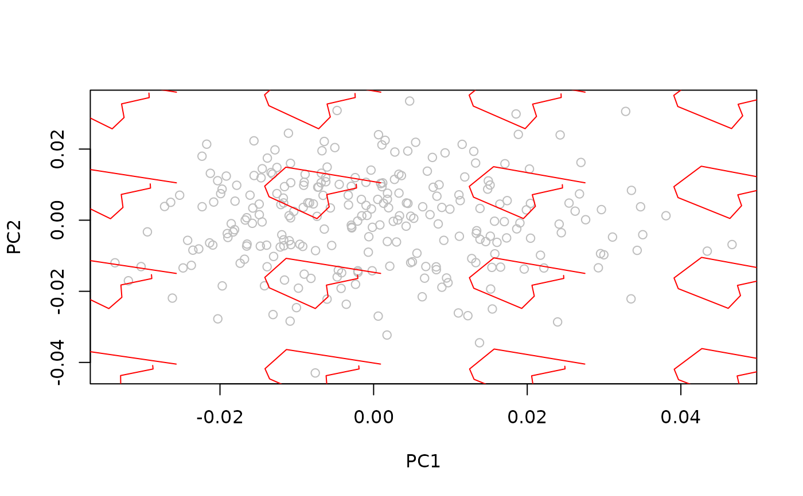
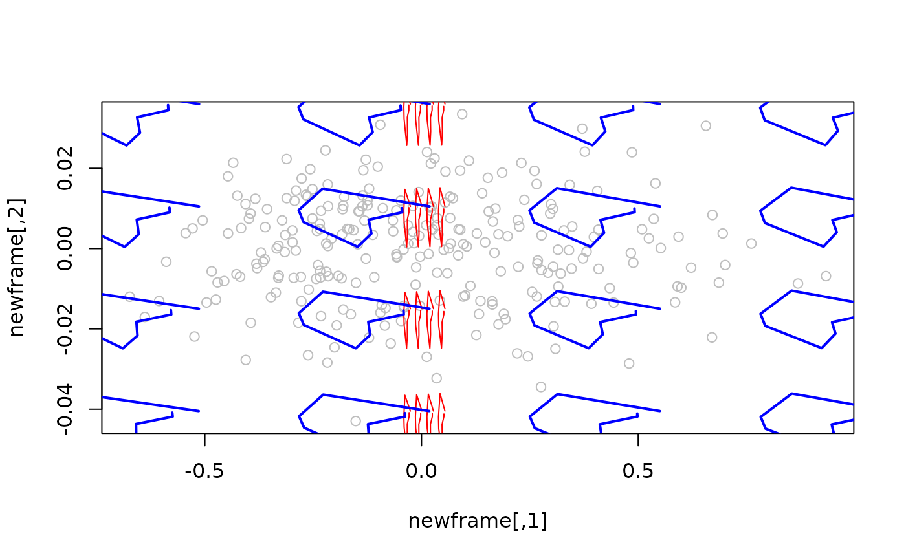

Adjust aspect and scale of background shape models for 2D data
Source:R/internal_builders.R
adjust_models2d.RdAvoid background shape models distortion caused by differences in ranges of x and y axes. Used internally.
Arguments
- models
An array containing the background shape models.
- frame
The frame in which shape models are to be plotted.
- model_width
Numeric; the width of a reference shape model (usually the consensus).
- model_height
Numeric; the height of a reference shape model (usually the consensus).
Examples
#load package and data
library(geomorph)
#> Loading required package: RRPP
#> Loading required package: rgl
#> Loading required package: Matrix
library(Morpho)
#>
#> Attaching package: ‘Morpho’
#> The following object is masked from ‘package:RRPP’:
#>
#> classify
data("wings")
shapes <- wings$shapes
#perform pca, extract ranges for PC1 and 2 and plot
pca <- prcomp(two.d.array(shapes))
xlim <- range(pca$x[,1])
ylim <- range(pca$x[,2])
plot(pca$x, col = "gray", xlim = xlim, ylim = ylim)
#calculate and plot shape grid
shapes_grid0 <- morphogrid(ordination = pca, axes = c(1,2), datype = "landm",
k = ncol(shapes), p = nrow(shapes),
nh = 4, nv = 4, xlim = xlim, ylim = ylim)
for(i in 1:dim(shapes_grid0$models_arr)[3]) {
points(shapes_grid0$models_arr[,,i], type = "l", col = "red")
}

#amplify range of x axis and replot grid
newframe <- cbind(pca$x[,1] * 20, pca$x[,2])
plot(newframe, col = "gray")
for(i in 1:dim(shapes_grid0$models_arr)[3]) {
points(shapes_grid0$models_arr[,,i], type = "l", col = "red")
}
#calculate width and height of consensus shape
wh <- abs(apply(apply(consensus(shapes_grid0$models_arr), 2, range), 2, diff))
#ajust grid to new frame and plot
adj_grid <- adjust_models2d(models = shapes_grid0$models_arr, frame = newframe,
model_width = wh[1], model_height = wh[2])
for(i in 1:dim(adj_grid)[3]) points(adj_grid[,,i], type = "l", col = "blue", lwd = 2)
